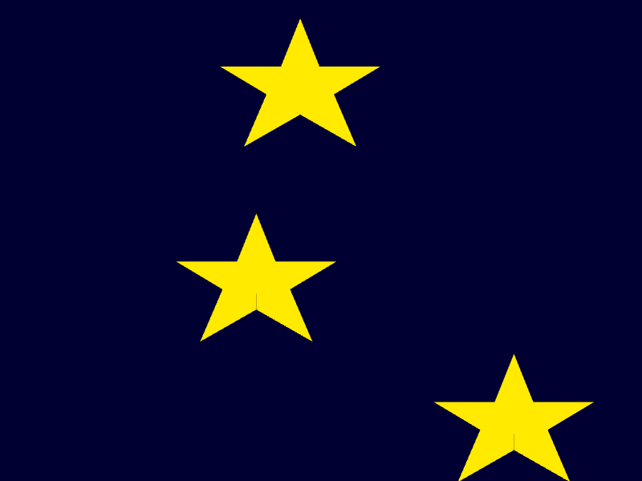

Your sketch:
The code in exercise1-1/sketch.js creates a star shape using five triangles.
Write a function called star and move the code that creates the star inside the new function. Call
your new function from draw() and make sure the star appears as before.
Next, modify the star() function so that it takes two arguments representing the star's location. Edit
the code for the star so that it draws the star at the arguments rather than the canvas centre.
Modify draw() so that three stars are drawn at random locations.
When you are done, check your work using check-exercise1-1.html.
Expected output:

If you're not sure how to create your own function, consult the slides.
To get modify the star code so that it draws at the location provided by
the arguments, notice that every point of the triangles that make up the
star is relative to the centre of the canvas. Replace each instance of width / 2 with
the argument that represents the x coordinate of the star and replace each
instance of height / 2 with the argument that represents the y coordinate
of the star.
You will need global variables for each coordinate of each star. These variables should be initialised with a random
value in setup() then the variables should be passed to star() in draw().